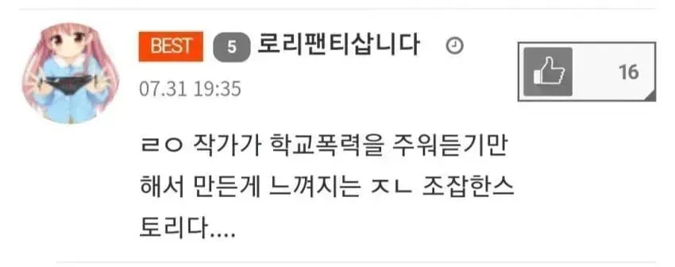

56 · 9 · 5 시간 전 · 원문

닉에서 부터 느껴지는
수집 당시 댓글 9개
보추퍼리게이진흥재단 · 20 시간 전
가해자인지 피해자인지는 아직 모르는거죠?
↳ 답글 · 게임은PC로 · 20 시간 전
저 닉에 프사인데 가해자일 리는 없지 않음?
↳ 답글 · 보추퍼리게이진흥재단 · 20 시간 전
↳ 답글 · 연쇄짜글이살인마 · 6 시간 전
ㅋㅋㅋㅋㅋㅋㅋㅋㅋㅋㅋㅋㅋㅋㅋㅋㅋㅋㅋ
↳ 답글 · 회사에서코고는중 · 6 시간 전
딱봐도 무조껀 피해자담당 일찐 부재는 심각한 중범죄임
보듬어주는사회 · 6 시간 전
폭력이 아닌 ‘관리‘ 입니다
avocado · 6 시간 전
닉네임부터 진짜 주먹을 부른다
Matitd · 6 시간 전
그래서 저게 뭐에 대한 비평인가요
디어센트 · 4 시간 전
저새긴 좀 쳐맞아도 됨
가해자인지 피해자인지는 아직 모르는거죠?